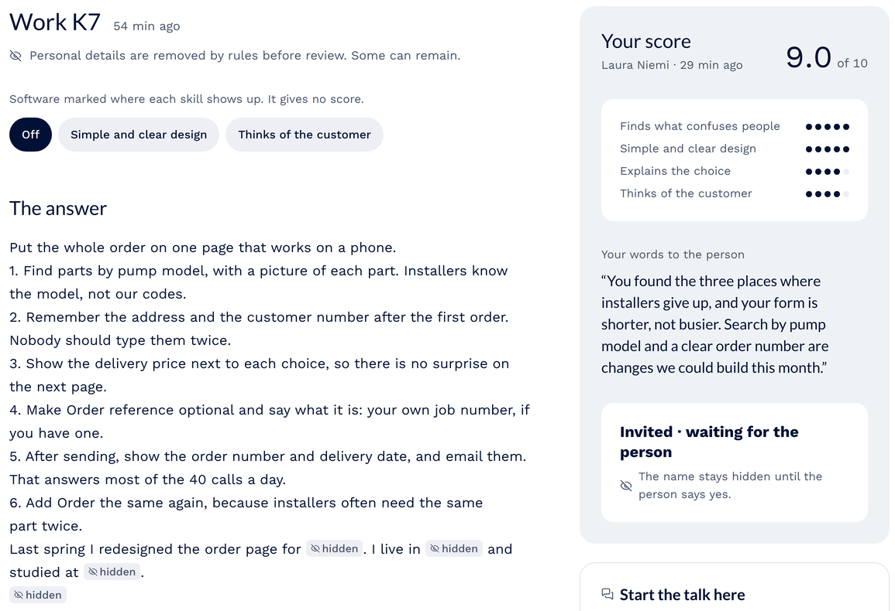
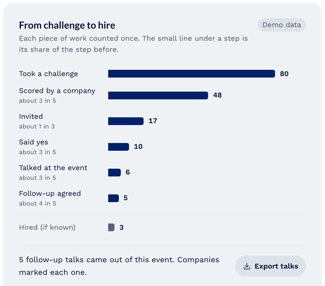

For the City of Espoo Junction 2026 challenge "Rethinking Recruitment" Team Moonshot
At your talent events, companies see real work. A named person scores it. The AI never does.
A professional does a short, real task from an Espoo company. A person at that company reads the work with known personal details removed, gives 1 to 5 points on each core skill, writes a reason and chooses who to meet. The name appears only after the professional says yes. The city sees every step, from challenge taken to hire.
How it works
1Company sets a taskA job-ad link or one sentence becomes a short challenge with 3 to 5 core skills. A person approves it.
2People do the workBefore the event, from any phone or laptop. They write how they think and answer two questions about their own choices.
3Read blindNames, contacts, schools, places and past employers are removed by rules before anyone reads it.
4A person scores1 to 5 per skill, with a written reason. Then Meet, Not now, or decide later.
5Yes, then the nameThe person accepts and the company sees the name. Both sides confirm the talk. The city counts it.
Your brief, answered
What the City of Espoo described
What WorkProof does
Companies describe their needs late and vaguely.
The company pastes a job-ad link or writes one sentence. The assistant asks at most two short questions, then drafts the challenge. Ten wishes become 3 to 5 core skills; the rest are set aside with a reason.
CVs are written by AI and read by AI.
The company reads work done on its own task, plus the person's answers to two follow-up questions about their own choices. The first talk starts from that work.
Companies doubt the city's talent pool.
The city can make a challenge from a company's public job ad before the company joins. In the demo, Kide Silicon's challenge, made by the city, already holds 20 pieces of work.
Too many irrelevant approaches.
Each task takes 5 to 30 answers (12 by default), so a company can read them all. Work waits in arrival order. Every answer is work on that company's task.
Bias by nationality, language, school or career path.
Known personal details are removed by rules before review. Tasks cannot ask for protected attributes. A wish for a native speaker becomes "Ask for a language level, not a native speaker."
No automated decisions about people.
The AI drafts tasks and questions only. Every score and every decision carries the name of a person registered by the company and a written reason. The audit log counts 0 automated decisions.
The city wants to see impact, not sign-ups.
The city view counts each step: challenge taken, scored, invited, said yes, talked, follow-up agreed, hired. Per company, it shows the work still waiting for a reply.
Three views, one event
Job seeker
Show what you can do
Pick a challenge from an Espoo company. Choose, Make, Fix or Read.
Get points and a written reason from a person.
Accept or decline. A declined company never sees your name.
workproof.wicflow.com/
Company
Meet people for their work
Paste a job ad or one sentence. Edit and approve the draft.
Read the work without names, in arrival order.
Score each skill 1 to 5, write why, invite.
workproof.wicflow.com/employer
City of Espoo
Run events that lead to hires
Make a challenge for a company from its job ad.
Draft a reminder to a company with work waiting.
Export the list of talks. Slots and labels, never names.
workproof.wicflow.com/city
workproof.wicflow.com Code: github.com/felixwickholm/workproof (MIT) Team Moonshot
What people see

Company. Laura at Halla Supply reads Work K7. His name, a past client, where he lives and his school show as "hidden". She gives points per skill and writes why: 9.0 of 10.

City of Espoo. From challenge to hire, for one event: 80 pieces of work, 48 scored, 17 invited, 10 said yes, 6 talks, 5 follow-ups, 3 hires. Demo data.
Why the proof is trustworthy and fair
The AI helps. It never judges.
Does: drafts a task from a company's need, and writes two follow-up questions about the person's own choices.
Never: scores, ranks, rates or recommends a person, and never decides Meet or Not now.
A guard checks every AI output in English, Finnish and Swedish and rejects scores, ranks, verdicts and protected attributes.
Text reaches a model only after the blind rules have run. A built-in task designer works with no model at all, so the event never depends on one service.
People decide, with a name and a reason.
A decision without the reviewer's points, a name from the company's list and at least 4 words of feedback is refused by the server.
Work waits in arrival order. The only other order is a task's top work, by the reviewers' own totals.
The name reaches a company only after the person accepts. The city sees counts and labels, never names.
Second look: with the person's consent, unanswered work can reach a second company with the same skills.
Built for the EU AI Act and GDPR
The AI's role is kept to drafting tasks and questions: it does not evaluate, filter, rank or profile candidates (AI Act Annex III point 4, Article 6(3)). Human oversight (Art. 14), an audit log (Art. 12) and AI labels are built in. No voice or face analysis (Art. 5).
GDPR Article 22: no decision is based solely on automated processing. Data minimisation by design: no account, no profile, the person's key stays in their browser, photos are stripped of metadata. All demo data is synthetic.
What is proven
2,057 of 2,057unit tests pass, in 142 filesnpm test
64 of 64eval tests pass, in 7 suitesnpm run eval
0 of 79planted identity details reached a reviewernpm run eval
70 of 70judging phrases rejected by the guardnpm run eval
0automated decisions in the audit lognpm run eval
28 of 28steps from task to a confirmed meeting, follow-up and hirenpm run eval
0 of 47talent ids found in company and city responsesnpm run eval
143 of 143browser steps on a phone screen against the live sitenpm run eval:e2e
Unit and eval counts: npm run evidence, 15 November 2026 (commit 4cdd054). End-to-end run on live build 31a2bbe, 15 November 2026. Each number has a command anyone can run; no keys needed.
Try it in two minutes
workproof.wicflow.com
Open the link. A 17-card walkthrough tells Mikko's story across all three views (the QR code starts it).
On a phone, open /try: a 2-minute task, then see what a company would read.
Open /for-judges for each claim with a route, a file and a test. No sign-in.